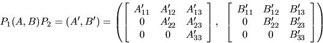
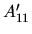
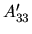
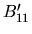
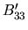
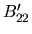
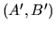
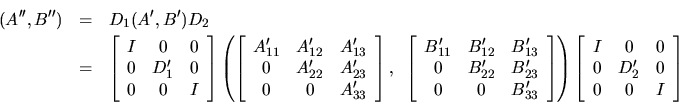
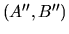

Next: Deflating Subspaces and Condition
Up: Generalized Nonsymmetric Eigenproblems
Previous: Eigenvalues, Eigenvectors and Generalized
Contents
Index
The routine xGGBAL
may be used to balance the matrix pair (A,B)
prior to reduction to generalized Hessenberg form.
Balancing involves two steps, either of which is optional:
- 1.
- First, xGGBAL attempts to permute (A,B)
by an equivalence transformation
to block upper triangular form:

where P1 and P2 are permutation matrices and ,
,

and 
are upper
triangular. Thus the matrix pair is already in generalized Schur
form outside the central diagonal blocks
and

in rows and columns ILO to IHI. Subsequent operations
by xGGBAL, xGGHRD or xHGEQZ need only be applied to these rows and
columns; therefore ILO and IHI are passed as arguments to xGGHRD and
xHGEQZ. This can save a significant amount of work if ILO > 1
or IHI < n. If no suitable permutations can be found (as is very
often the case), xGGBAL sets ILO = 1 and IHI = n, and
is the whole of A and
is the whole
of B.
- 2.
- Secondly, xGGBAL applies diagonal equivalence transformations
to

to attempt to make the matrix norm smaller
with respect
to the eigenvalues and tries to reduce the inaccuracy contributed by
roundoff [100]:

This can improve the accuracy of later processing in some cases; see
subsection 4.11.1.2.
If the matrix pair (A,B) was balanced by xGGBAL, then eigenvectors
computed by subsequent operations are eigenvectors of the balanced
matrix pair
.
xGGBAK
must then
be called to transform them back to eigenvectors of the original matrix
pair (A,B).
Note that these transformations can improve speed and accuracy of
later processing in some cases; however, the diagonal transformation
step can occasionally make the norm of the pencil
larger
and hence degrade the accuracy.
Next: Deflating Subspaces and Condition
Up: Generalized Nonsymmetric Eigenproblems
Previous: Eigenvalues, Eigenvectors and Generalized
Contents
Index
Susan Blackford
1999-10-01